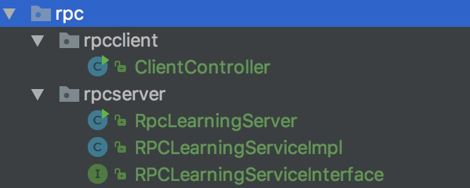
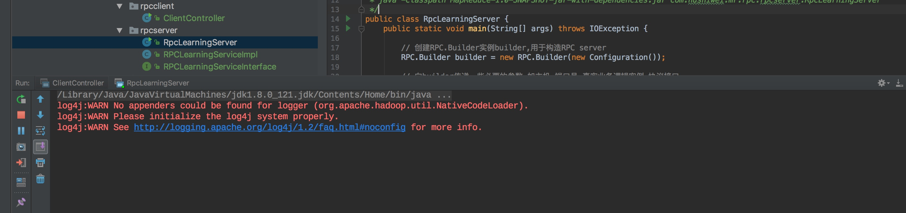
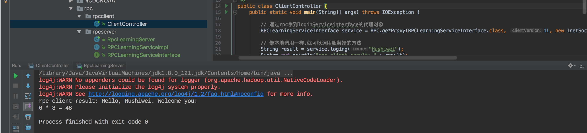
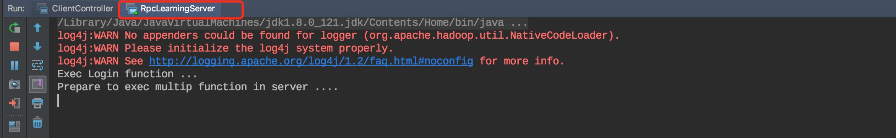
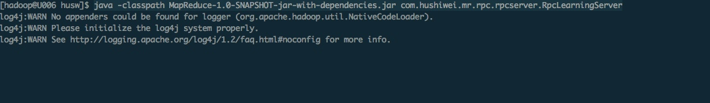
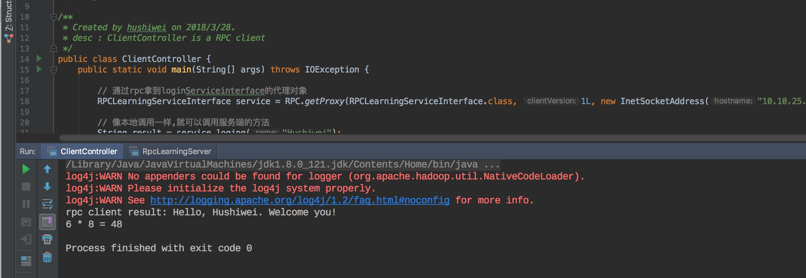
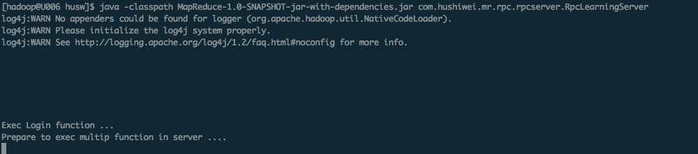
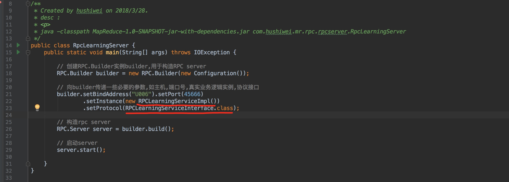
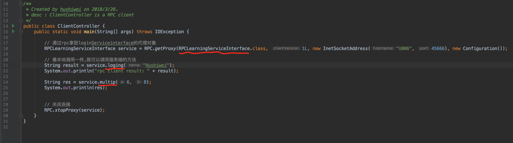

RPC是一种通过网络从远程计算机上请求服务的机制，封装了具体实现，使用户不需要了解底层网络技术。目前存在许多开源RPC框架，比较有名的有Thrift、Protocol Buffers和Avro。Hadoop RPC与他们一样，均由两部分组成：对象序列化和远程过程调用
什么是远程过程调用?
首先从字面上解释，“过程”在Java中指的就是对象中的方法，“远程”是指不同机器上的进程（狭义），或者不同的进程（广义）（为了简单，下文不对这种情况进行说明）。因此，RPC就是允许程序调用其他机器上的对象方法。
RPC是属于典型的C/S结构，提供服务的一方称为server，请求服务的一方称为client。server端提供对象方法供client端调用，被调用的对象方法的执行发生在server端。
上面这样解释其实已经很明白了,为了更直观的理解.
那么就不废话了,直接上一个例子,用代码说话.
RPC 实例
简单来说,就是在client调用远程服务器里面的方法就像在本地调用自己的方法一样.
我们的实例用hadoop rpc框架,那么我们需要引入对应的依赖
<dependency>
<groupId>org.apache.hadoop</groupId>
<artifactId>hadoop-common</artifactId>
<version>2.7.1</version>
</dependency>
Hadoop RPC主要由三个大类组成，即RPC、Client和Server，分别对应对外编程接口、客户端实现和服务器实现
代码分为两部分
- 服务端的逻辑代码(server-rpc)
- 客户端调用服务端的逻辑代码(client-rpc)

服务端server-rpc
RPCLearningServiceInterface
定义一个接口,我们想要客户端调用的方法
/**
* Created by hushiwei on 2018/3/28.
* desc : RPC协议是client端和server端之间的通信接口，它定义了server端对外提供的服务接口。
*/
public interface RPCLearningServiceInterface {
// 协议版本号,不同版本号的client和sever之间不能相互通信
static final long versionID = 1L;
// 登录方法
String loging(String name);
// 乘法
String multip(int a, int b);
}
RPCLearningServiceImpl
接口的具体实现类
/**
* Created by hushiwei on 2018/3/28.
* desc :Hadoop RPC协议通常是一个Java接口，定义了server端对外提供的服务接口，需要在server端进行实现
*
* server端的协议实现中不需要关注Socket通信
*
*/
public class RPCLearningServiceImpl implements RPCLearningServiceInterface {
@Override
public String loging(String name) {
System.out.println("Exec Login function ...");
return "Hello, " + name + ". Welcome you!";
}
@Override
public String multip(int a, int b) {
System.out.println("Prepare to exec multip function in server ....");
return a + " * " + b + " = " + a * b;
}
}
RpcLearningServer
server-rpc的启动类
/**
* Created by hushiwei on 2018/3/28.
* desc :
*
* java -classpath MapReduce-1.0-SNAPSHOT-jar-with-dependencies.jar com.hushiwei.mr.rpc.rpcserver.RpcLearningServer
*/
public class RpcLearningServer {
public static void main(String[] args) throws IOException {
// 创建RPC.Builder实例builder,用于构造RPC server
RPC.Builder builder = new RPC.Builder(new Configuration());
// 向builder传递一些必要的参数,如主机,端口号,真实业务逻辑实例,协议接口
builder.setBindAddress("localhost").setPort(45666)
.setInstance(new RPCLearningServiceImpl())
.setProtocol(RPCLearningServiceInterface.class);
// 构造rpc server
RPC.Server server = builder.build();
// 启动server
server.start();
}
}
客户端client-rpc
ClientController
客户端的代码里面调用了服务端提供的api
/**
* Created by hushiwei on 2018/3/28.
* desc : ClientController is a RPC client
*/
public class ClientController {
public static void main(String[] args) throws IOException {
// 通过rpc拿到loginServiceinterface的代理对象
RPCLearningServiceInterface service = RPC.getProxy(RPCLearningServiceInterface.class, 1L, new InetSocketAddress("localhost", 45666), new Configuration());
// 像本地调用一样,就可以调用服务端的方法
String result = service.loging("Hushiwei");
System.out.println("rpc client result: " + result);
String res = service.multip(6, 8);
System.out.println(res);
// 关闭连接
RPC.stopProxy(service);
}
}
本地执行
- 为了方便,我在本机进行测试,服务器地址写的localhost
- 我在idea中进行开发的,直接run起来
运行RpcLearningServer类,启动rpc服务

运行ClientController类,启动client,进行远程调用

此时,看服务端的输出

这个也说明了,远程调用过程是在服务端执行的.
远程执行
刚刚在本地执行的,为了更说明问题.我把服务器地址从localhost改成服务器的主机名u006,然后代码编译打包,上传到服务器上.
在远程服务器上启动rpc-server.然后再本地执行客户端的代码.
这样更能清楚的明白rpc的运行过程了
java -classpath MapReduce-1.0-SNAPSHOT-jar-with-dependencies.jar com.hushiwei.mr.rpc.rpcserver.RpcLearningServer

在服务器上启动了rpc-server,现在客户端还没启动,服务器上也没有任何输出.
接着在本地执行客户端代码

紧跟着,服务器上也有相应的输出了.

补充:
在服务器上启动rpcserver后,可以用jps -m查看这个服务器的启动情况
[hadoop@U006 ~]$ jps -m
30432 Jps -m
6979 RpcLearningServer
或者查看代码里面用的端口是否被占用中
[hadoop@U006 ~]$ netstat -natp | grep 45666
(Not all processes could be identified, non-owned process info
will not be shown, you would have to be root to see it all.)
tcp 0 0 ::ffff:10.10.25.13:45666 :::* LISTEN 6979/java
是不是很熟悉,我们曾经安装hadoop后,用jps -m也可以看到hadoop里面的一些进程.比如
NameNode、DataNode、ResourceManager、NodeManager.
所以这些进程都是作为一个RPCserver,并对外提供RPC服务的.
总结
定义RPC协议,实现RPC协议
构造并启动RPC服务

构成RPC客户端并发送RPC请求

使用Hadoop RPC的4个步骤
- 定义RPC协议
- 实现RPC协议
- 构造并启动RPC server
- 构造RPC client并发送RPC请求